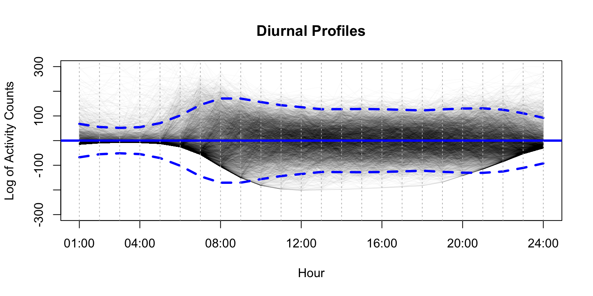
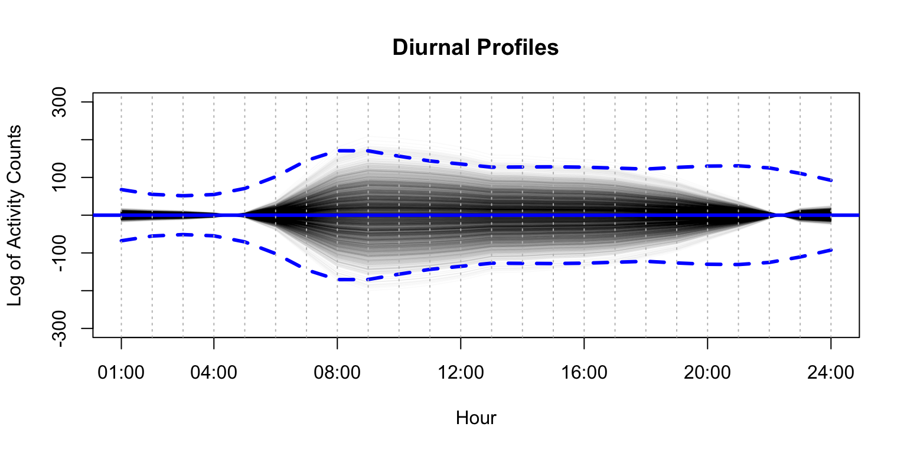
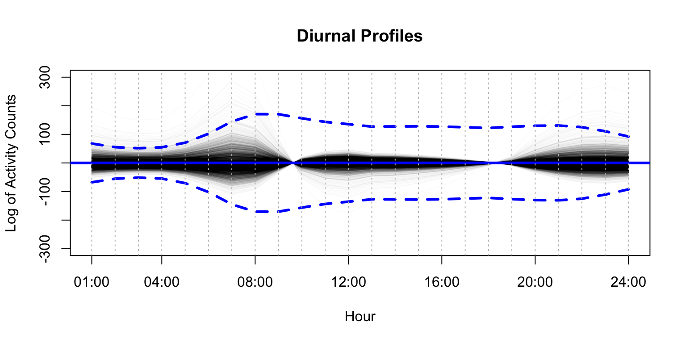
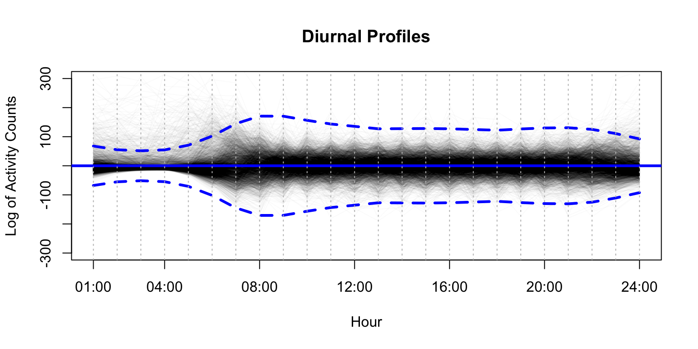
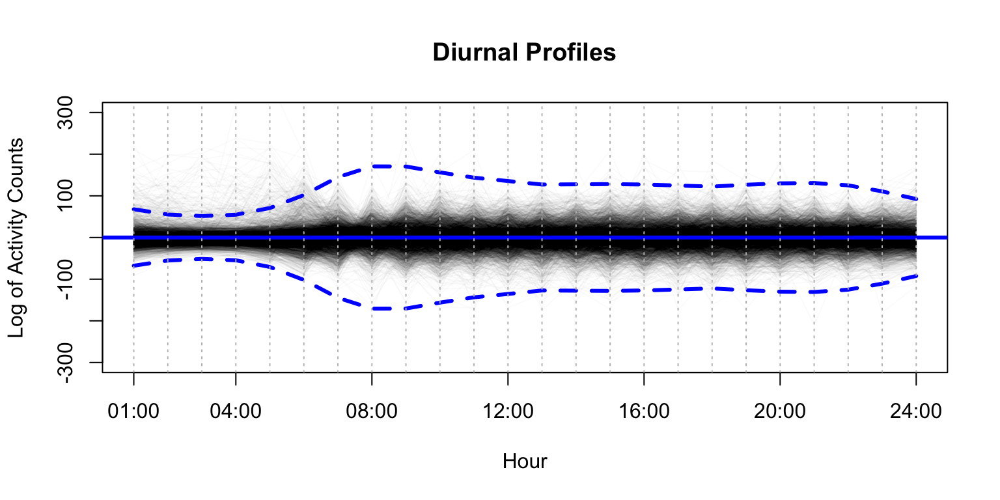

Functional PCA
This page contains a combination of traditional lecture materials (slides) and code demonstrating the relevant methods. The short course will proceed by working through both. We will use several recent packages in our examples; see the About page for information about the package versions.
library(tidyverse)
## Registered S3 methods overwritten by 'ggplot2':
## method from
## [.quosures rlang
## c.quosures rlang
## print.quosures rlang
## ── Attaching packages ─────────────────────────────────────────────────────────── tidyverse 1.2.1 ──
## ✔ ggplot2 3.1.1 ✔ purrr 0.3.2
## ✔ tibble 2.1.2 ✔ dplyr 0.8.1
## ✔ tidyr 0.8.3 ✔ stringr 1.4.0
## ✔ readr 1.3.1 ✔ forcats 0.4.0
## ── Conflicts ────────────────────────────────────────────────────────────── tidyverse_conflicts() ──
## ✖ dplyr::filter() masks stats::filter()
## ✖ dplyr::lag() masks stats::lag()
library(grpreg)
##
## Attaching package: 'grpreg'
## The following object is masked from 'package:dplyr':
##
## select
library(splines)
library(refund)
library(refund.shiny)
library(reshape2)
##
## Attaching package: 'reshape2'
## The following object is masked from 'package:tidyr':
##
## smiths
library(plotly)
##
## Attaching package: 'plotly'
## The following object is masked from 'package:grpreg':
##
## select
## The following object is masked from 'package:ggplot2':
##
## last_plot
## The following object is masked from 'package:stats':
##
## filter
## The following object is masked from 'package:graphics':
##
## layoutIn this section, we will use the NHANES_JSM_2019 data to illustrate scalar on function regression (sofr).
NHANES data
The participant-specific daily activity profiles have been created by i) log-transforming minute level counts per minute, ii) calculating hourly total activity count (hTAC), iii) averaging the hTAC over all available days. Thus, a participant-specific daily activity profile is represented by 24 points.
First, we to plot all participant-specific daily activity profiles:
\[x_i(t), t = 1,\ldots, 24\]
#load("./DataCode/JSM_2019_NHANES.RDA")
load("./DataCode/NHANES_JSM_2019.RData")
hTAC = as.matrix(hTAC)
n = dim(hTAC)[1] # number of participants
col.light = rgb(0, 0, 0, alpha = 8, maxColorValue = 255)
x.range = 1:24
## plot all profiles
plot(x.range, hTAC[1,], type = "n", ylim = range(hTAC), xaxt = "n", ylab = "Log of Activity Counts", xlab = "Hour", col = col.light, main = "Diurnal Profiles")
for(i in 2:n) lines(1:24, hTAC[i,], col = col.light, type = "l", lwd = 1)
axis(1, at = c(1, 4, 8, 12, 16, 20, 24), labels = c("01:00", "04:00", "08:00", "12:00", "16:00", "20:00", "24:00"))
abline(v = 1:24, col = "gray", lty = "dotted")Marginal information
One way to look at the marginal information is by looking at marginal hour-specific means and standard deviations. Below, we add the mean curve and plus/minus 1.96 times standard deviations curves
hTAC.mean <- apply(hTAC, 2, mean)
hTAC.sd <- apply(hTAC, 2, sd)
## plot all profiles
plot(x.range, hTAC[1,], type = "n", ylim = range(hTAC), xaxt = "n", ylab = "Log of Activity Counts", xlab = "Hour", col = col.light, main = "Diurnal Profiles")
for(i in 2:n) lines(x.range, hTAC[i,], col = col.light, type = "l", lwd = 1)
lines(x.range, hTAC.mean, col = "blue", type = "l", lwd = 2)
lines(x.range, hTAC.mean + 1.96*hTAC.sd, col = "blue", type = "l", lty = "dashed", lwd = 2)
lines(x.range, hTAC.mean - 1.96*hTAC.sd, col = "blue", type = "l", lty = "dashed", lwd = 2)
axis(1, at = c(1, 4, 8, 12, 16, 20, 24), labels = c("01:00", "04:00", "08:00", "12:00", "16:00", "20:00", "24:00"))
abline(v = 1:24, col = "gray", lty = "dotted")Sample summaries
We can calculate hour-specific sample mean as
\[\bar{x}(t)= \frac{1}{n}\sum_{i=1}^n x_i(t)\]
the hour-specific sample variance as
\[\widehat{Var}(x(t)) = \frac{1}{n}\sum_{i=1}^n (x_i(t)-\bar{x}(t))^2\]
and the total sample variation as
\[\sum_{t=1}^T \widehat{Var}(x(t)) = \frac{1}{n}\sum_{t=1}^T \sum_{i=1}^n (x_i(t)-\bar{x}(t))^2\]
PCA treats the total variation as total information
Sample covariance and correlation matrixes
Sample covariance matrix is defined as
\[\hat{\Sigma}(t,s) = \widehat{Cov}(x(t), x(s)) = \frac{1}{n}\sum_{i=1}^n (x_i(t)-\bar{x}(t))(x_i(s)-\bar{x}(s)), \quad s,t = 1,\ldots, 24\]
## plot the covariance surface
hTAC.cov = cov(hTAC)
plot_ly(z = ~hTAC.cov) %>% add_surface()\[\widehat{Corr}(x(t), x(s)) = \frac{\widehat{Cov}(x(t), x(s))}{\sqrt{\widehat{Cov}(x(t))\widehat{Cov}(x(s))}}, \quad s,t = 1,\ldots, 24\]
## plot the covariance surface
hTAC.cor = cor(hTAC)
plot_ly(z = ~hTAC.cor) %>% add_surface()Intuition behind PCA
De-meaning
# create de-meaned diurnal profiles
hTAC.demean = hTAC - matrix(apply(hTAC, 2, mean), n, 24, byrow = TRUE)
## plot all profiles
plot(x.range, hTAC.demean[1,], type = "n", ylim = c(-300,300), xaxt = "n", ylab = "Log of Activity Counts", xlab = "Hour", col = col.light, main = "Diurnal Profiles")
for(i in 2:n) lines(1:24, hTAC.demean[i,], col = col.light, type = "l", lwd = 1)
axis(1, at = c(1, 4, 8, 12, 16, 20, 24), labels = c("01:00", "04:00", "08:00", "12:00", "16:00", "20:00", "24:00"))
abline(h = 0, col = "blue", lwd = 3)
lines(1.96*hTAC.sd, col = "blue", lwd = 3, type = "l", lty = "dashed")
lines(-1.96*hTAC.sd, col = "blue", lwd = 3, type = "l", lty = "dashed")
abline(v = 1:24, col = "gray", lty = "dotted")
Principal components
Find “principal” patterns that explain largest proportions of total variation (= information). Principal components = “principal” patterns (PC1 = red, PC2 = green, PC3 = blue) (1-2-3 = rgb)
s = eigen(hTAC.cov, symmetric = T)
phi = s$vectors
col = c("red", "green", "blue")
plot(1:24, phi[,1], ylim = c(-0.4, 0.4), xaxt = "n", xlab = "Time of Day", ylab = "AU", lwd = 3, col = col[1], type = "l")
for (k in 2:3) lines(1:24, phi[,k], lwd = 3, col = col[k], type = "l")
axis(1, at = c(1, 4, 8, 12, 16, 20, 24), labels = c("01:00", "04:00", "08:00", "12:00", "16:00", "20:00", "24:00"))
abline(v = 1:24, col = "gray", lty = "dotted")
abline(h = 0, col = "black", lty = "dotted", lwd = 2)PC1
PC1 explains 37.5% of total variation (note the local behaviour)
# create de-meaned diurnal profiles, calculate 1st PC and subtract its contribution
hTAC.demean.cov = cov(hTAC.demean)
s = eigen(hTAC.demean.cov, symmetric = T)
phi = s$vectors
PC1 = phi[,1]
PC1.score = as.matrix(hTAC.demean) %*% phi[,1]
hTAC.PC1 <- PC1.score %*% phi[,1]
hTAC.demean.minus.PC1 = hTAC.demean - hTAC.PC1
## plot all profiles
plot(x.range, hTAC.PC1[1,], type = "n", ylim = c(-300,300), xaxt = "n", ylab = "Log of Activity Counts", xlab = "Hour", col = col.light, main = "Diurnal Profiles")
for(i in 2:n) lines(1:24, hTAC.PC1[i,], col = col.light, type = "l", lwd = 1)
axis(1, at = c(1, 4, 8, 12, 16, 20, 24), labels = c("01:00", "04:00", "08:00", "12:00", "16:00", "20:00", "24:00"))
abline(h = 0, col = "blue", lwd = 3)
lines(1.96*hTAC.sd, col = "blue", lwd = 3, type = "l", lty = "dashed")
lines(-1.96*hTAC.sd, col = "blue", lwd = 3, type = "l", lty = "dashed")
abline(v = 1:24, col = "gray", lty = "dotted")
PC2
PC2 explains 22.5% of total variation (but note the local behaviour)
# create de-meaned diurnal profiles, calculate 1st PC and subtract its contribution
hTAC.demean.cov = cov(hTAC.demean)
s = eigen(hTAC.demean.cov, symmetric = T)
phi = s$vectors
PC2 = phi[,2]
PC2.score = as.matrix(hTAC.demean) %*% PC2
hTAC.PC2 <- PC2.score %*% PC2
hTAC.demean.minus.PC2 = hTAC.demean - hTAC.PC2
## plot all profiles
plot(x.range, hTAC.PC2[1,], type = "n", ylim = c(-300,300), xaxt = "n", ylab = "Log of Activity Counts", xlab = "Hour", col = col.light, main = "Diurnal Profiles")
for(i in 2:n) lines(1:24, hTAC.PC2[i,], col = col.light, type = "l", lwd = 1)
axis(1, at = c(1, 4, 8, 12, 16, 20, 24), labels = c("01:00", "04:00", "08:00", "12:00", "16:00", "20:00", "24:00"))
abline(h = 0, col = "blue", lwd = 3)
lines(1.96*hTAC.sd, col = "blue", lwd = 3, type = "l", lty = "dashed")
lines(-1.96*hTAC.sd, col = "blue", lwd = 3, type = "l", lty = "dashed")
abline(v = 1:24, col = "gray", lty = "dotted")PC3
PC3 explains 10.7% of total variation (but note the local behaviour)
# create de-meaned diurnal profiles, calculate 1st PC and subtract its contribution
PC3 = phi[,3]
PC3.score = as.matrix(hTAC.demean) %*% PC3
hTAC.PC3 <- PC3.score %*% PC3
hTAC.demean.minus.PC3 = hTAC.demean - hTAC.PC3
## plot all profiles
plot(x.range, hTAC.PC3[1,], type = "n", ylim = c(-300,300), xaxt = "n", ylab = "Log of Activity Counts", xlab = "Hour", col = col.light, main = "Diurnal Profiles")
for(i in 2:n) lines(1:24, hTAC.PC3[i,], col = col.light, type = "l", lwd = 1)
axis(1, at = c(1, 4, 8, 12, 16, 20, 24), labels = c("01:00", "04:00", "08:00", "12:00", "16:00", "20:00", "24:00"))
abline(h = 0, col = "blue", lwd = 3)
lines(1.96*hTAC.sd, col = "blue", lwd = 3, type = "l", lty = "dashed")
lines(-1.96*hTAC.sd, col = "blue", lwd = 3, type = "l", lty = "dashed")
abline(v = 1:24, col = "gray", lty = "dotted")
Residual variability
De-meaned diurnal profiles
plot(x.range, hTAC.demean[1,], type = "n", ylim = c(-300,300), xaxt = "n", ylab = "Log of Activity Counts", xlab = "Hour", col = col.light, main = "Diurnal Profiles")
for(i in 2:n) lines(1:24, hTAC.demean[i,], col = col.light, type = "l", lwd = 1)
axis(1, at = c(1, 4, 8, 12, 16, 20, 24), labels = c("01:00", "04:00", "08:00", "12:00", "16:00", "20:00", "24:00"))
abline(h = 0, col = "blue", lwd = 3)
lines(1.96*hTAC.sd, col = "blue", lwd = 3, type = "l", lty = "dashed")
lines(-1.96*hTAC.sd, col = "blue", lwd = 3, type = "l", lty = "dashed")
abline(v = 1:24, col = "gray", lty = "dotted")
Subtract PC1 that explains 37.5% of total variation
PC1.score = as.matrix(hTAC.demean) %*% PC1
hTAC.PC1 <- PC1.score %*% PC1
hTAC.demean.minus.PC1 = hTAC.demean - hTAC.PC1
## plot all profiles
plot(x.range, hTAC.demean.minus.PC1[1,], type = "n", ylim = c(-300,300), xaxt = "n", ylab = "Log of Activity Counts", xlab = "Hour", col = col.light, main = "Diurnal Profiles")
for(i in 2:n) lines(1:24, hTAC.demean.minus.PC1[i,], col = col.light, type = "l", lwd = 1)
axis(1, at = c(1, 4, 8, 12, 16, 20, 24), labels = c("01:00", "04:00", "08:00", "12:00", "16:00", "20:00", "24:00"))
abline(h = 0, col = "blue", lwd = 3)
lines(1.96*hTAC.sd, col = "blue", lwd = 3, type = "l", lty = "dashed")
lines(-1.96*hTAC.sd, col = "blue", lwd = 3, type = "l", lty = "dashed")
abline(v = 1:24, col = "gray", lty = "dotted")Subtract PC1 and PC2 that explain 60% of total variation
s = eigen(hTAC.demean.cov, symmetric = T)
phi = s$vectors
## PC1
PC1 = phi[,1]
PC1.score = as.matrix(hTAC.demean) %*% PC1
hTAC.PC1 <- PC1.score %*% PC1
## PC2
PC2 = phi[,2]
PC2.score = as.matrix(hTAC.demean) %*% PC2
hTAC.PC2 <- PC2.score %*% PC2
hTAC.demean.minus.PC12 = hTAC.demean - hTAC.PC1 - hTAC.PC2
## plot all profiles
plot(x.range, hTAC.demean.minus.PC12[1,], type = "n", ylim = c(-300,300), xaxt = "n", ylab = "Log of Activity Counts", xlab = "Hour", col = col.light, main = "Diurnal Profiles")
for(i in 2:n) lines(1:24, hTAC.demean.minus.PC12[i,], col = col.light, type = "l", lwd = 1)
axis(1, at = c(1, 4, 8, 12, 16, 20, 24), labels = c("01:00", "04:00", "08:00", "12:00", "16:00", "20:00", "24:00"))
abline(h = 0, col = "blue", lwd = 3)
lines(1.96*hTAC.sd, col = "blue", lwd = 3, type = "l", lty = "dashed")
lines(-1.96*hTAC.sd, col = "blue", lwd = 3, type = "l", lty = "dashed")
abline(v = 1:24, col = "gray", lty = "dotted") Subtract PC1, PC2, and PC3 that explain 70.8% of total variation
hTAC.demean.cov = cov(hTAC.demean)
s = eigen(hTAC.demean.cov, symmetric = T)
phi = s$vectors
## PC1
PC1 = phi[,1]
PC1.score = as.matrix(hTAC.demean) %*% PC1
hTAC.PC1 <- PC1.score %*% PC1
## PC2
PC2 = phi[,2]
PC2.score = as.matrix(hTAC.demean) %*% PC2
hTAC.PC2 <- PC2.score %*% PC2
## PC3
PC3 = phi[,3]
PC3.score = as.matrix(hTAC.demean) %*% PC3
hTAC.PC3 <- PC3.score %*% PC3
hTAC.demean.minus.PC123 = hTAC.demean - hTAC.PC1 - hTAC.PC2 - hTAC.PC3
## plot all profiles
plot(x.range, hTAC.demean.minus.PC123[1,], type = "n", ylim = c(-300,300), xaxt = "n", ylab = "Log of Activity Counts", xlab = "Hour", col = col.light, main = "Diurnal Profiles")
for(i in 2:n) lines(1:24, hTAC.demean.minus.PC123[i,], col = col.light, type = "l", lwd = 1)
axis(1, at = c(1, 4, 8, 12, 16, 20, 24), labels = c("01:00", "04:00", "08:00", "12:00", "16:00", "20:00", "24:00"))
abline(h = 0, col = "blue", lwd = 3)
lines(1.96*hTAC.sd, col = "blue", lwd = 3, type = "l", lty = "dashed")
lines(-1.96*hTAC.sd, col = "blue", lwd = 3, type = "l", lty = "dashed")
abline(v = 1:24, col = "gray", lty = "dotted") ### Scree-plot
s = eigen(hTAC.cov, symmetric = T)
lambda = s$values
plot(1:24, 100*lambda/sum(lambda), xlab = "PC", ylab = "% of total variation explained", lwd = 4, col = "blue")
abline(v = 1:24, col = "gray", lty = "dotted")
abline(h = (1:10)*10, col = "gray", lty = "dotted")plot(1:24, 100*cumsum(lambda)/sum(lambda), xlab = "PC", ylab = "cumulative % of total variation explained",lwd = 4, col = "blue")
abline(v = 1:24, col = "gray", lty = "dotted")
abline(h = (1:10)*10, col = "gray", lty = "dotted")Functional PCA
Classical PCA does not use smoothness. Functional PCA smooths the sample covariance matrix and then finds corresponding PCs. R package “refund” performs functional PCA.
s = fpca.sc(hTAC, var = TRUE, npc = 6)
x.mean = s$mu
phi.fpca = s$efunctions
lambda.fpca = s$evalues
sigma.fpca = s$sigma2Let us compare PC1 (blue dots) and fPC1 (red curve)
# create de-meaned diurnal profiles, calculate 1st PC and subtract its contribution
s.svd = eigen(hTAC.demean.cov, symmetric = T)
phi.svd = s.svd$vectors
## plotting smooth vs non-smooth PCs
plot(x.range, phi.svd[,1], ylim = c(-0.4, 0.4), xaxt = "n", ylab = "AU", xlab = "Hour", col = "blue", main = "Compare PCs vs fPCs")
lines(1:24, phi.fpca[,1]/sqrt(sum(phi.fpca[,1]^2)), col = "red", type = "l", lwd = 1, lty = "dashed")
axis(1, at = c(1, 4, 8, 12, 16, 20, 24), labels = c("01:00", "04:00", "08:00", "12:00", "16:00", "20:00", "24:00"))
abline(h = 0, col = "gray", lwd = 2)
abline(v = 1:24, col = "gray", lty = "dotted")Let us compare PC2 (blue dots) vs fPC2 (red curve)
Main reasons for not seeing larger differences: pre-smoothing (binning in hour epochs), smaller samples likely results in larger deviations.
# create de-meaned diurnal profiles, calculate 1st PC and subtract its contribution
s.svd = eigen(hTAC.demean.cov, symmetric = T)
phi.svd = s.svd$vectors
## plotting smooth vs non-smooth PCs
plot(x.range, phi.svd[,2], ylim = c(-0.4, 0.4), xaxt = "n", ylab = "AU", xlab = "Hour", col = "blue", main = "Compare PCs vs fPCs")
lines(1:24, phi.fpca[,2]/sqrt(sum(phi.fpca[,2]^2)), col = "red", type = "l", lwd = 1, lty = "dashed")
axis(1, at = c(1, 4, 8, 12, 16, 20, 24), labels = c("01:00", "04:00", "08:00", "12:00", "16:00", "20:00", "24:00"))
abline(h = 0, col = "gray", lwd = 2)
abline(v = 1:24, col = "gray", lty = "dotted")Technical details
fPCA wants to find a sequence of orthonormal functions \(\phi_1(t),\ldots, \phi_K(t)\) that sequentially explains most of total variation = total information
Step 1: Find \(\phi_1(t)\) that maximizes \(\sum_{i=1}^n \xi^2_{i1}\), where
scores/projections \(\xi_{i1} = <x_i, \phi_1> = \int_1^{24} x_i(t)\phi_1(t) dt \quad \mbox{and}\quad \int_1^{24} \phi^2_1(t) dt = 1\) keep the information.
Step k: Find \(\phi_k(t)\) that maximizes \(\sum_{i=1}^n \xi^2_{ik}\) and \(<\phi_k,\phi_s> = 0, s < k\)
scores \(\xi_{ik} = <x_i, \phi_k> = \int_1^{24} x_i(t)\phi_k(t) dt\quad \mbox{and} \quad \int_1^{24} \phi^2_k(t) dt = 1\)
Thus, each observed diurnal pattern is substituted with its fPCA approximation \[x_i(t) \approx \mu(t) + \phi_1(t)\xi_{i1}+\phi_2(t)\xi_{i2}+\phi_3(t)\xi_{i3} \] \[\phi_1(t),\phi_2(t), \phi_3(t)\] are principal functions (data-driven population-level basis) + \(\xi_{i1},\xi_{i2},\xi_{i3}\) are principal scores (subject-specific coordinates)
Dimension-reduction via fPCA
Instead of dealing with 24 correlated numbers \((x_i(1), x_i(2),\ldots, x_i(24))\), we can now focus only on 3 uncorrelated scores \(\xi_{i1}, \xi_{i2}, \xi_{i3}\) that are ordered in terms of the amount of preserved information and combined preserve roughly 70% of total variation.